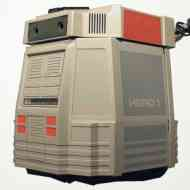
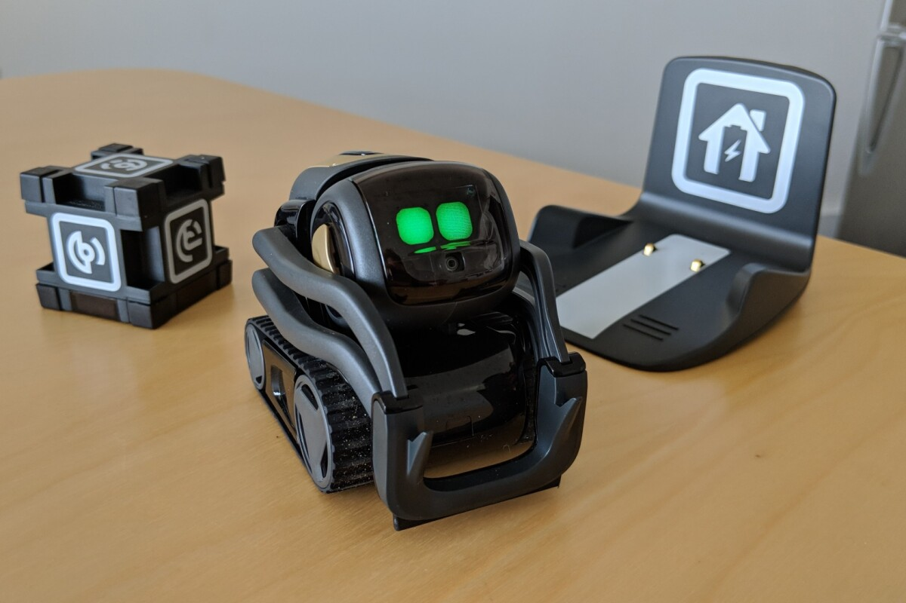

On this website you will find all the information you need to know about home robots.
Starting with the history, One of the first home robot was called "HERO" which sold in the 1980's. HERO was a robot designed by Heathkit to educate. Another prototype was called "Topo" which was avalible in 1980's by Androbot Inc, It allowed the user to do geomectric movements and coplete tasks, although, because it does not have a sensor it wasnt considered a robot until the second genoration contained a infared transmitter and could be controlled by a remote. With these two products, Home robots became more accesible by 2006 and by 2021 technoligy has grown to the point where rbots can feel,talk,and move on their own.
"HERO"
How much are home robots today? Most home robots are around 300-1,000 dollars depending on what their designed to do. It takes over $150,000 just to produce a home robot. If your working for any companies that sell home robots you would make around $61,447 a year. You might be thinking, What can home robots do? Home robots can clean your floors,bring snacks to you, keep your family close with video calls, act as a personal assistant, answer questions or just be cute. like this little robot named Vector. 